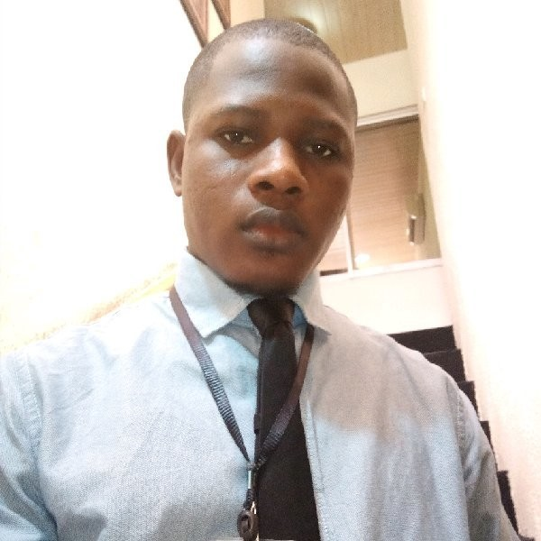

Ibrahim Oguntoyinbo

Web Developer | Digital Marketer | Copywriter
Summary
I am a proficient communication strategist with remarkable project coordination
skills leading high-performing teams. My areas of expertise include Website development,
digital marketing, project management, event management, and copywriting.
Education
- University of Lagos M.Sc. Mass Communication (Advertising & Public Relations) -2024
- Crescent University, Abeokuta B.Sc. Mass Communication - 2019
- Moshood Abiola Polytechnic HND Mass Communication (Print Journalism) - 2015
- Ajebo Community High School Secondary School Leaving Certificate - 2008
Work Experience
Senior Project Manager
-
Total School Support Seminar/Exhibition (By Edumark) - 2017-Present
- Onboarding exhibitors and event coordination
- Engaging potential event attendees with 7000+ conversion annually
- Marketing strategies and sales promotional designs to drive sales of exhibition
booths with more than 30% annual increase.
- Collaborate with suppliers/exhibitors to create an exceptional event experience
for each edition.
- Identified areas for improvement in existing processes and proposed innovative
solutions to optimize performance.
Digital Marketing Specialist
-
Edumark Consult 2016 - Present
- Designing landing pages and websites for in-house projects/services
- In charge of overseeing all social media accounts, websites,
and blogs for the digital marketing team.
- Collaborate closely with the CEO to develop projects/services that will meet market demand.
- Creating PowerPoint presentations and introduce potential customers to digital marketing services.
- Manages third-party social media accounts, online events and copywriting for website and blogs.
Social Media Manager/Copywriter (Remote)
-
Hubryde - 2021
- Managing social media platforms and engaging audience across Hubryde online touch-points.
- Creative writing for the blog to build up good PR for the brand through advertorial.
- Regular advisory services on cost effective online marketing promotions and sales
plan to increase customer base.
- Leads generation for online/offline sales.
- Increase customer's onboarding rate across all routes by 45% through consistent engagement and timely responses
to enquiries.
- Designing email marketing communication for returning customers and prospects
Soft Skills
- Project Management
- Team Leadership
- Client Relationship Management
- Strategic Planning
- Training and Mentorship
- Excellent Verbal and Written Communication
- Problem Solving
Technical Skills
- Website Development
- Digital Marketing: Content development, Facebook/Instagram ad, Google ad, SEO, Blogging,
Email/SMS marketing and designs with Canva.
- Research and Data Analysis: Proficiency in Microsoft Word, Excel and PowerPoint and a
good understanding of SPSS data analysis software
- Project Management: Coordinate and execute exhibitions, training and seminars
- Copywriting: Developing business proposals and marketing related content
CERTIFICATION
- WordPress for Business by UpSkill Cubithost
- Jobberman Soft-Skills Training
- Google My Business Basics
- The Online Marketing Fundamentals Qualification
- Mastermind Leadership Training (The John Maxwell Team)
- National Youth Service Corps (NYSC)
Other Information
Hobbies
Contact Me